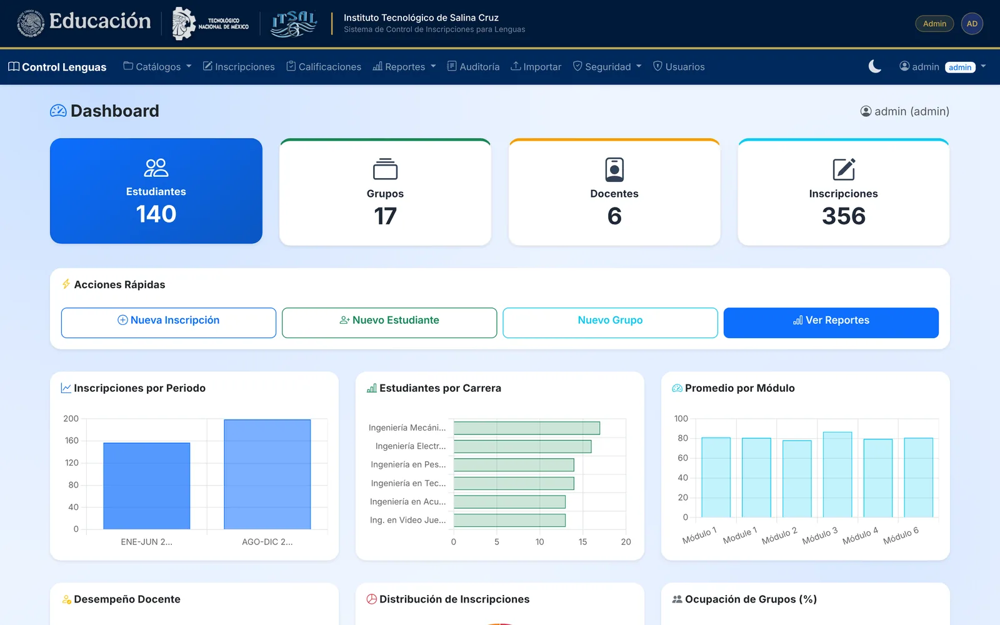

En producción · Instituto Tecnológico de Salina CruzIn production · Instituto Tecnológico de Salina Cruz
Control de Inscripciones de LenguasLanguage Course Enrollment System
Gestiona los cursos de idiomas del instituto: inscripción a grupos, calificaciones por módulo, reportes y constancias oficiales con validación pública por QR. Manages the institute's language courses: group enrollment, grades per module, reports and official certificates with public QR validation.
- El retoThe challenge
- Controlar cupos de grupos, el avance de cada estudiante por módulo (niveles MCER A1–B2) y emitir constancias que cualquiera pueda verificar.Track group capacity and each student's progress by module (CEFR levels A1–B2), and issue certificates anyone can verify.
- Mi rolMy role
- Único desarrollador: análisis, base de datos, API, frontend, despliegue y soporte.Sole developer: analysis, database, API, frontend, deployment and support.
- Arquitectura desacoplada: panel web PHP que consume una API REST mediante un token puente JWT.Decoupled architecture: a PHP web panel consuming a REST API through a JWT bridge token.
- Constancias PDF con folio y código QR que apunta a una página pública de validación por UUID.PDF certificates with a serial number and a QR code that points to a public UUID validation page.
- Reportes de ocupación, desempeño docente y estudiantes en riesgo; exportación a Excel, CSV y PDF.Reports on capacity, teacher performance and at-risk students; export to Excel, CSV and PDF.
- Módulo de seguridad con bloqueo de IPs, bitácora y auditoría de acciones.Security module with IP blocking, logs and an action audit trail.
- Despliegue continuo por FTP con GitHub Actions a un hosting compartido sin SSH.Continuous deployment over FTP with GitHub Actions to shared hosting without SSH.
PHP 8.3JB FrameworkMariaDBBootstrap 5Chart.jsTCPDFJWTGitHub Actions
Sistema institucional con código privado. Las capturas muestran su funcionamiento; no hay un repositorio público para inspeccionar.Institutional system with private code. Screenshots show its functionality; there is no public repository to inspect.

Capturas con datos ficticios.Screenshots with fictitious data.